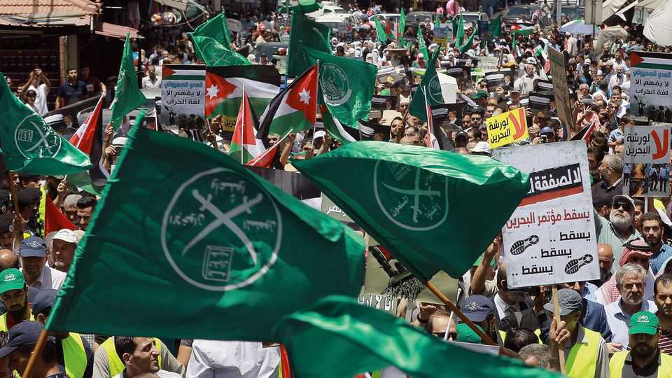

The Muslim Brotherhood is more divided and weaker than ever
But it is far from finished in the Middle East

Aug 13th 2026
The heat inside Mornaguia prison, on the edge of Tunis, climbed past 50°C this summer. On July 17th Rachid Ghannouchi, the 85-year-old founder of Ennahda, the Tunisian political party inspired by the Muslim Brotherhood, passed out in his cell. His story seems destined to end like that of Muhammad Morsi, the Brotherhood figure elected as president of Egypt in 2012, only to die in prison in 2019.
Mr Ghannouchi’s fate illustrates the declining influence of his ideological comrades across the Middle East. A decade and a half ago parties associated with the Brotherhood held the presidency of Egypt and a plurality of seats in Tunisia’s parliament. Its triumphal message was pumped out to the Arab masses by Qatar’s popular Al Jazeera television channel. The group seemed the early winner of the Arab spring that erupted in Tunisia in late 2010 and spread through the Arab world in 2011.
But autocracies soon reimposed themselves. In the years that followed, the Brotherhood’s leaders were imprisoned or scattered into exile. The past year has been especially punishing. In November Donald Trump told his administration to designate the group’s various chapters as terrorists. On January 13th it listed the Egyptian and Jordanian branches as “global terrorists” for aiding Hamas, which grew out of the Brotherhood’s Palestinian branch; the Lebanese version was officially deemed a “foreign terrorist” organisation. In May, under a new American counter-terrorism strategy, the Brotherhood was included alongside al-Qaeda and Islamic State as a wellspring of modern jihadism. Jordan banned the group completely in April 2025 and has since curbed its political wing, the Islamic Action Front.
It is unclear which bit of the fractious Brotherhood America is targeting. There have been two main factions since 2021, when Ibrahim Munir, running the group from exile in London, dissolved its structures in Turkey, as Mahmoud Hussein, the movement’s secretary-general, claimed that Mr Munir had himself been deposed. Each faction now has its own leader, its own Shura council and its own website; each insists it alone is the real thing.
Salah Abdel Haq, who took over Mr Munir’s faction after the latter’s death in 2022, has promised to contest the American designation in American courts. But the branch in Istanbul has let it be known that it does not consider its parent organisation qualified to answer for anyone. Even as they face an existential crisis, the two halves cannot speak with a single voice.
Mr Hussein of the Turkish branch controls the property, investment companies in Turkey and the cash, whereas Mr Abdel Haq stakes a claim to run the transnational organisation but has little to show for it. Former members have urged both men to drop politics and revert to preaching.
In Egypt, the movement’s ancestral heartland, its period in power is being scrubbed from official memory. Muhammad Badie, the movement’s “supreme guide” in Egypt, is in prison. On religious holidays President Abdel Fattah al-Sisi issues pardons—but rarely for the Brothers. He has shut down the businesses that once sustained their welfare programme. Tunisia’s president, Qais Saeed, is emulating Mr Sisi by jailing Mr Ghannouchi.
In Gaza Israel has pounded Hamas, which remains a close ideological associate, into the Mediterranean sand. Its territory has been all but destroyed, while Israeli hit squads hunt Hamas’s leaders across the region. Though Hamas clings on, its power has shrivelled. Many Gazans have turned against it.
Syria is another site of humiliation. When the Assad regime fell in 2024, it was Sunni jihadists who took Damascus, not the Brotherhood. It had spent the war dithering and found itself outflanked by the men who did the fighting. It is almost absent from Syria’s new parliament. Ahmed Zeidan, an adviser to President Ahmed al-Sharaa with long-standing Brotherhood ties, has suggested that its Syrian branch should fold itself up. Writing for Al Jazeera, Abdulrahman al-Haj, a Syrian expert on Islamist groups, argues that political Islam is no longer so relevant in the new Syria.
Perhaps so. But it has long been unwise to write the Brotherhood off. It was dissolved in 1948 and crushed again by Gamel Abdel Nasser, Egypt’s leader, in 1954. Its chief theorist, Sayyid Qutb, was hanged in 1966. The group spent most of the next four decades outlawed, yet its followers still took 88 seats in Egypt’s parliament in 2005 and won the presidency after a democratic election in 2012. “They are just excellent at weathering the storm,” says a Western intelligence official in the region.
Repression can officially efface the organisation. But it does not remove the reasons people join it. In Egypt, those reasons are as sharp as ever. The country’s shoddy economy survives on IMF handouts and Gulf deposits. Its young graduates are as grumpily underemployed as they were in 2010. Tunisia, too, is as badly off as it was when it sparked the Arab spring.
Israel’s war in Gaza has left Arab governments looking impotent or complicit. With the strip destroyed, the Brotherhood’s founding claim—that the Arab world’s humiliation is spiritual before it is material—still makes sense to many of the region’s aggrieved. The Brotherhood laid its roots with social-welfare programmes and a strong appeal to Arab dignity, both sorely lacking among leaders across the Middle East. When the group turns 100 in March 2028, expect it to be alive and kicking, however divided its leadership. ■